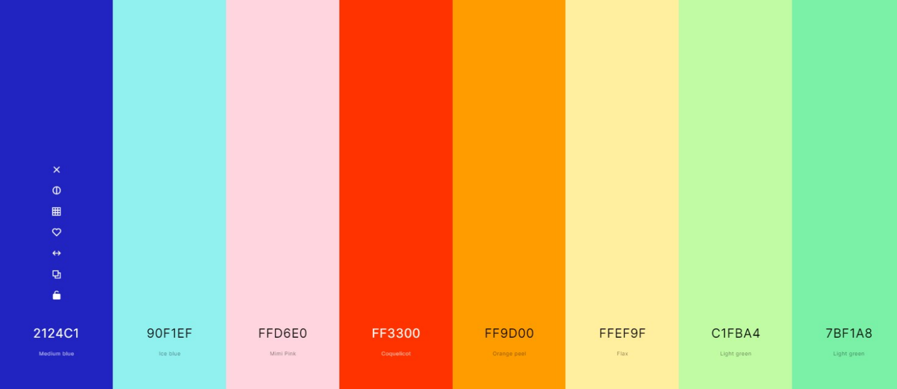

PALETA DE COLORES
Para el Toys”R”Us pretendemos usar una paleta de colores pasteles, ya que los niños se sienten atraídos por estos y son nuestro público objetivo. Hemos elegido colores como el celeste y el rosa que han representado a niños y niñas respectivamente a lo largo de la historia. Además del color rojo que siempre ha sido popular especialmente para niños así como dos colores cercanos a él, el naranja y amarillo. Por último las dos tonalidades de verde
Hemos tenido en cuenta que los niños se sienten atraídos a colores fuertemente cálidos y pretendemos usar esos colores en juguetes o categorías enfocadas a niños, mientras que las niñas prefieren colores ligeramente cálidos de manera que esos serán los colores más usados en sus secciones. Además hemos elegido los verdes como colores neutrales que gustan a ambos géneros.
A parte de los colores pasteles usaremos iconos minimalistas y con temática infantil/adolescente. Para los menús usaremos el azul marino que hará buen contraste con la letra de color blanco.